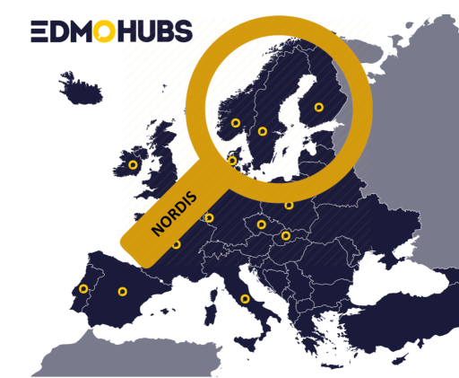

Nordic Observatory for Digital Media and Information Disorder
The Nordic Observatory for Digital Media and Information Disorder (NORDIS) is a consortium of researchers and fact-checkers from Denmark, Norway, Sweden, and Finland. We are one of the national hubs of The European Digital Media Observatory (EDMO).
Project Abstract
The aim is to develop theories, practices and models that can help counteract digital information disorders – the spread of misinformation, disinformation and other forms of harmful information online – and to help empower citizens in the Nordic welfare states to resist such information by enabling them to enhance their media literacy.
Collaborators
The consortium is lead by Aarhus University’s DATALAB. Our principal investigator is professor Anja Bechmann.
NORDIS has members from several universities and fact-checking organizations: Aarhus University (Denmark), University of Helsinki (Finland), University of Bergen (Norway), Uppsala University (Sweden), Faktisk.no (Norway), Källkritikbyrån (Sweden),TjekDet (Denmark), Faktabaari (Finland).